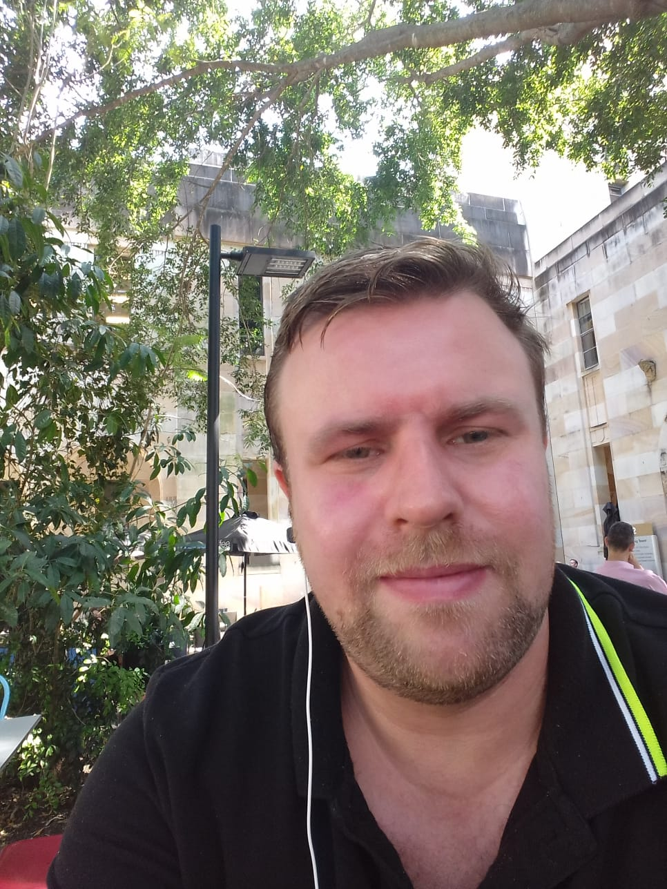

Martin Schweinberger
ABOUT
My name is Martin Schweinberger and I am Senior Lecturer in Applied Linguistics at the University of Queensland (UQ) in Australia. At UQ, I am Director of the Language Technology and Data Analysis Laboratory (LADAL) (together with Michael Haugh) and I would consider myself a quantitative corpus linguist specialised in computational analyses of text and speech. In my research, I aim to combine and bridge the gap between computational linguistics and corpus linguistics.
I am steering committee member and Chief Investigator (CI) of the Language Data Commons of Australia (LDaCA) where I focus on producing resources and training through LADAL. LDaCA aims at establishing language data infrastructures and text analytics upskilling resources in Australia and has received substantive funding from the Australian Research Data Commons (ARDC). I am Associate Editor of the Australian Review of Applied Linguistics (ARAL) and book series editor for the Bloomsbury series Language, Data Science and Digital Humanities. Finally, I am also Vice-President Profession of the International Society for the Linguistics of English (ISLE) and re-elected board member of the International Computer Archive of Modern and Medieval English (ICAME).
Regarding my background, I have a PhD in English linguistics and I studied at the Universität Kassel, Germany, where I graduated in 2008 with an MA in English Philology, Philosophy, and Psychology. After my MA, I remained in Kassel for a short while but soon moved to Hamburg to work on my PhD thesis.

RESEARCH AREAS
- Mechanisms of language variation and change
- Determinants of language use and linguistic variability
- Discourse markers and particles / adjective intensification
- L1 & L2 acquisition
- Computational modelling and visualization of linguistic data
- Computational Humanities (Digital Humanities)
- Language Data Science and reproducibility
- Best Practices in text analytics and data management
DIGITAL FOOTPRINT
My ORCID is 0000-0003-1923-9153 and you can also find me on Google Scholar, ResearchGate, LinkedIn, GitHub, GitLab, or follow me on Twitter/X (@ronautic).
NEWS
12/12/2025: Stephanie Hackert from LMU Munich invited me to give a talk on Vulgarity in World Englishes (slides).
7/11/2025: Giving a talk on Vulgarity in Spoken Interaction Across Englishes and a Lightning Talk on Data Structure Harmonization at the Forum on Englishes in Australia in Melbourne.
12/10/2025: Amir Sheikhan from the University of South Australia invited me to give a lecture on “Vulgarity in World Englishes”. (slides and recording)
13/6/2025: Just out: The Conversation article about “201 ways to say ‘fuck’” by Kate Burridge and myself.
6/4/2025: Was on ABC Radio Melbourne Victorian Evenings with David Astle together with Kate Burridge (28:28–42:32) — you can listen to the segment here.
30/5/2025: Was on ABC Radio Hobart with Joel Rheinberger (4:15–18:50) to discuss Kate’s and my paper on vulgarity in online discourse. You can listen to the segment here and read our open-access paper here.
23/5/2025: I was on TV — Kate’s and my study made it to the national news! Check out this Channel 10 News segment!
22–23/5/2025: I spoke about vulgarity in public and online discourse on ABC Drive with Ellen Fanning (22 May) and on ABC Radio Melbourne with Ali Moore (23 May). You can listen to the ABC Drive interview here (17:50–33:00), and read our open-access paper (with Kate Burridge) here.
27/1/2025: I am invited to the University of Hamburg to talk about Indigenous Australian Languages — Linguistic Features, Revitalization Efforts, and Research Infrastructure for Archiving and Accessibility as part of the Lecture Series “Preserving the Past – Shaping the Future: Zur Dokumentation von Sprache und Kultur” (slides).
25/11/2024: I am invited to the University of Bonn to talk about Vulgarity in Online Discourse around the English-Speaking World (slides).
16/12/2023: I have been invited to give a talk at the University of Innsbruck about what we can learn from analyses of adjective amplification (slides).
13/12/2023: I’m invited to give a talk on my research about computational analyses of vowel production among L1- and L2-speakers of English at the Carl von Ossietzky University Oldenburg.
2/11/2023: I just checked the web-traffic analytics of LADAL and since starting the analytics on January 1, 2021, we have had more than 750,000 page views, 400,000+ active sessions, and 300,000+ users!
19/1/2023: I am giving a workshop on conditional inference trees at the Rheinische Friedrich-Wilhelms-Universität Bonn (workshop materials).
13/1/2023: I am invited to give a talk entitled Reproducibility in corpus-based computational analyses of learner speech at the Institute of English Studies at the University of Hamburg (slides).
25/10/2022: I have the honour of giving a talk about transparency and reproducibility in Corpus Linguistics for the Sydney Corpus Lab led by Monika Bednarek at the University of Sydney. Here is a link to the slides.
1/9/2022: I co-organized the workshop Computational Thinking in the Humanities. The workshop focused on the history and future as well as the challenges and the potential of computational approaches in the humanities and social sciences.
ACKNOWLEDGEMENTS
I would like to thank Susanne Flach for her help in setting up this website.
(last updated 2025/05)
Back to top